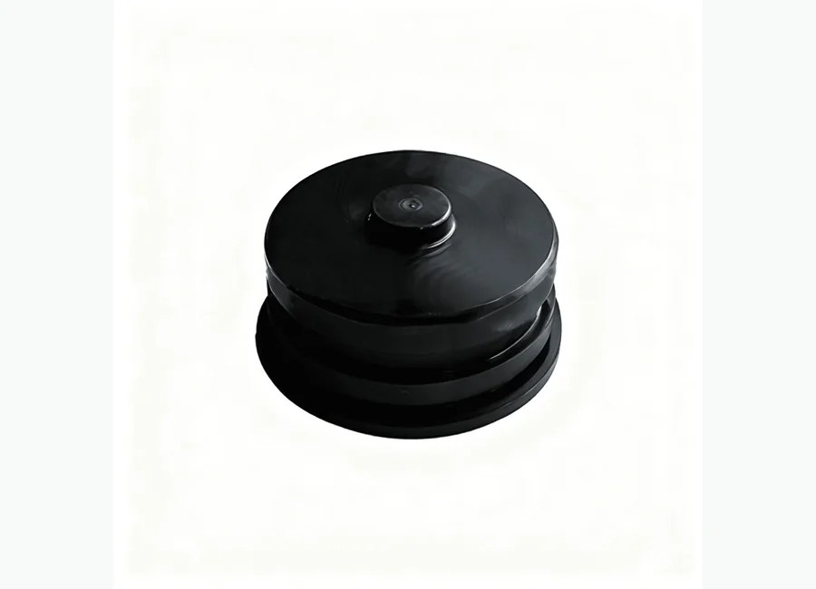

Как запросить цену
- Отправьте номер детали или модель оборудования.
- Можно приложить фото продукта или технический чертеж.
- Мы проверим совместимость и подготовим предложение.
Буровые насосы и запасные части
Плунжерный насос TPB600TPC600TPD600. Поставка для буровых, ремонтных и нефтесервисных проектов в Казахстане и странах Центральной Азии.

Используется для нефтепромыслового оборудования, буровых установок, насосных систем, устьевых операций, тормозных и гидравлических узлов в зависимости от категории продукта.
Подбор спецификации, экспортная упаковка, коммуникация на русском языке, WhatsApp и email поддержка для покупателей Центральной Азии.
Описание
Изображения с пометкой «добавить в описание» размещены здесь, а не используются как главная фотография товара.
Дополнительные фотографии описания пока не загружены. Отправьте номер детали или фото для уточнения спецификации.
Модели и спецификации
Если в исходной папке есть таблица с моделями, она отображается здесь для удобства подбора и запроса цены.
| Номер | Наименование | Номер | Наименование | Номер | Наименование | ||
|---|---|---|---|---|---|---|---|
| P61-11-000* | Корпус коленчатого вала | P61-12-001 | Коленвал в сборе с каналами смазки | P60-34-000 | Гидравлическая часть в сборе (3 1/2") | ||
| P61-11-001 | Корпус механической части | P60-12-014 | Коленвал с каналами смазки | P61-34-103 | Измерительный патрубок в сборе | ||
| P60-11-002 | 3”NPTЗаглушка | P61-12-002 | Боковая крышка | P60-34-105 | Сальник | ||
| P60-11-005 | Верхняя крышка | P60-12-027 | Стопор подшипника | P60-34-104 | Уплотнение | ||
| P60-11-006 | Нижняя крышка | P60-12-028 | Стопор подшипника | P61-34-200 | Фланец на выпуске в сборе | ||
| P60-11-010 | Задняя крышка | P60-12-005 | Прокладка боковой крышки | P61-34-201 | Фланец на выпуске | ||
| P60-11-008 | Прокладка задней крышки | P60-12-006 | Шайба подшипника | P60-34-206 | Уплотнение фланца | ||
| P60-11-009 | Фильтр сапуна | P60-12-024 | Подшипник | 000P569235 | О-образное кольцо #235 | ||
| X20-08-052 | Болт, 3/8”-16UNC-1”длина | P60-12-025 | Внешнее кольцо подшипника | P60-34-204 | 1"-8NC Гайка | ||
| X20-27-552 | 3/8”Шайба | P60-12-026 | Внутренее кольцо подшипника | P60-34-205 | 1"-8NC X 3 1/2 Шпилька | ||
| P60-11-014 | Шайба верхней и нижней крышки | P60-12-010 | Болт | P60-34-104 | Уплотнение | ||
| P60-11-015 | Крышка отверстия болтов | X20-22-909 | Гайка 7/8＂-9UNC | P60-34-311 | Всасывающий манифольд | ||
| X20-07-513 | 250"-20UNCx0.50" Болт | X20-27-637 | Шайба 7/8" | X20-08-010 | Болт,3/4"NCX1.5" | ||
| P60-11-018 | Опора насоса | P60-12-013 | Болт | P61-34-401 | Крышка на выпуске | ||
| P60-11-019 | Болт опоры | X00-00-150 | Проволока | P60-34-004 | Пружина | ||
| P60-11-020 | Заглушка | P60-12-015 | Шайба подшипника | P60-34-005 | Головка насоса,3 1/2",4" & 4-1/2" | ||
| P60-11-017 | Опора насоса | P60-12-016 | Шайба 1mm | P60-34-006 | Плунжер(3 1/2") | ||
| X20-27-637 | 7/8”Шайба | P60-12-017 | Шайба 0.5mm | P8T0005350 | 3 1/2"Набивка | ||
| X20-28-515 | 7/8"Шайба пружины | P61-12-005 | Прокладка боковой крышки, толщина: 2мм | P60-34-007 | Седло пружины | ||
| P15-04-031 | Прокладка | X20-28-509 | Пружинная шайба 5/16" | P60-34-600 | Клапан в сборе | ||
| P15-03-031 | Уплонительная втулка | X20-08-576 | Болт 5/16"-18UNx1" | P60-34-008 | Седло клапана,3 1/2",4" & 4-1/2" | ||
| P15-05-031 | Магнитное уплотнительная втулка | P61-12-004 | Заливной шприц коленвала | 000P569244 | О-образное кольцо#244 | ||
| 000P569120 | О-образное кольцо 90 DURO #120 | P15-08-031 | Стопорное кольцо | 000P569153 | О-образное кольцо#153 | ||
| 000P569126 | О-образное кольцо 90 DURO #126 | P15-09-031 | Шайба | P60-34-704 | Прокладка | ||
| P61-13-001 | Шатун в сборе с крейцкопфом (TPD600) | P15-04-031 | Прокладка | P61-34-702 | Крышка на всасе | ||
| P60-13-001 | Шатун | P15-03-031 | Уплонительная втулка | P61-34-011 | Винтовая крышка | ||
| P61-13-004 | Крейцкопф(TPD600) | P15-05-031 | Магнитное уплотнительная втулка | P60-34-012 | Тонкая соединительная штанга | ||
| P61-13-003 | Направляющая втулка крейкопфа | 000P569120 | О-образное кольцо 90 DURO #120 | P60-34-013 | Толстая соединительная штанга | ||
| P60-13-004 | Палец шатуна | 000P569126 | О-образное кольцо 90 DURO #126 | P60-34-820 | Корпус сальника | ||
| X22-01-026 | Замок пружины 90 GB893.1-86 | P61-14-000 | Редуктор в сборе TPD600 | P60-34-017 | Пружина | ||
| X04-02-012 | Шпилька 3.2x26 GB91-86 | P60-14-500 | Трубопроводы для смазки | P06-00-063 | Гайка набивки,3-1/2" | ||
| P60-13-007 | Вкладыш | P60-14-002 | Прокладка | X26-02-009 | Резьбовая втулка 1/4"-18NPT | ||
| P60-13-011 | Болт крепления направляющий втулки | P60-14-003 | Нажимная планка I | P60-40-000 | Гидравлическая часть в сборе (4") | ||
| X00-00-150 | Проволока | P60-14-004 | Крышка подшипника | P61-34-103 | Измерительный патрубок в сборе | ||
| P60-13-017 | Заглушка пальца шатуна | P60-14-100 | Подшипник | P60-34-105 | Сальник | ||
| P60-13-018 | Шайба крейцкопфа | P61-14-200 | Корпус | P60-34-104 | Уплотнение | ||
| X20-07-513 | Болт250"-20UNCx0.50" | P60-14-005 | Зубчатое колесо | P61-34-200 | Фланец на выпуске в сборе | ||
| P60-34-014 | Шпилька стягивающая | P60-14-006 | Заглушка (1/8"NPT) | P61-34-201 | Фланец на выпуске | ||
| P60-13-006 | Бронзовая втулка | P60-14-007 | Заглушка I | P60-34-206 | Уплотнение фланца | ||
| P60-13-012 | Болт | P60-14-008 | Заглушка II | 000P569235 | О-образное кольцо #235 | ||
| P60-13-013 | Гайка | X20-08-012 | Болт 1/2"-13UNC x 1.5"длина | P60-34-204 | 1"-8NC Гайка | ||
| P60-13-019 | Штифт | P60-14-010 | Крышка | P60-34-205 | 1"-8NC X 3 1/2 Шпилька | ||
| P60-27-000 | Гидравлическая часть в сборе(2.75") | P60-14-011 | Прокладка (0.7) | P60-34-104 | Уплотнение | ||
| P60-30-103 | Измерительный патрубок в сборе | X20-08-092 | Болт 1/2"-13UNC x 1.25"длина | P60-34-311 | Всасывающий манифольд | ||
| P60-30-105 | Сальник | V06-50-322 | шайба 1/2" | X20-08-010 | Болт,3/4"NCX1.5" | ||
| P60-34-104 | Уплотнение | P60-14-013 | Крышка | P61-34-401 | Крышка на выпуске | ||
| P60-30-200 | Фланец на выпуске в сборе | P60-14-014 | Прокладка | P60-40-004 | Пружина | ||
| P60-30-201 | Фланец на выпуске | P60-14-015 | Фланец | P60-34-005 | Головка насоса,3 1/2",4" & 4-1/2" | ||
| P60-34-206 | Уплотнение фланца | P60-14-016 | Удерживающая шайба | P60-40-006 | Плунжер (4") | ||
| 000P569235 | О-образное кольцо #235 | X20-08-142 | Болт,1"-14UNFX2"LG | P8T0005400 | 4"Набивка | ||
| P60-34-204 | 1"-8NC Гайка | X20-28-522 | Пружинная шайба(1") | P60-34-007 | Седло пружины | ||
| P60-34-205 | 1"-8NC X 3 1/2 Шпилька | P60-14-300 | Прокладка в сборе | P60-34-600 | Клапан в сборе | ||
| P60-34-104 | Уплотнение | P60-14-019 | Втулка | P60-34-008 | Седло клапана,3 1/2",4" & 4-1/2" | ||
| P60-34-311 | Всасывающий манифольд | P60-14-020 | Вал-шестерня | 000P569244 | О-образное кольцо#244 | ||
| X20-08-010 | Болт,3/4"NCX1.5" | P60-14-400 | Подшипник в сборе | 000P569153 | О-образное кольцо#153 | ||
| P60-30-401 | Крышка на выпуске | X20-08-787 | Болт 3/8"-16UNCx0.875" | P60-34-704 | Прокладка | ||
| P60-30-004 | Пружина | X20-28-507 | Болт 3/8" | P61-34-702 | Крышка на всасе | ||
| P60-30-005 | Головка насоса,3" | P60-14-012 | Прокладка(0.2) | P61-34-011 | Винтовая крышка | ||
| P60-27-006 | Плунжер(2.75 ") | P60-30-000 | Гидравлическая часть в сборе(3") | P60-34-012 | Тонкая соединительная штанга | ||
| P8T0005275 | 2.75 "набивка | P60-30-103 | Измерительный патрубок в сборе | P60-34-013 | Толстая соединительная штанга | ||
| P60-30-007 | Седло пружины | P60-30-105 | Сальник | P60-40-820 | Корпус сальника | ||
| P60-30-600 | Клапан в сборе | P60-34-104 | Уплотнение | P60-34-004 | Пружина | ||
| P60-30-008 | Седло клапана,3" | P60-30-200 | Фланец на выпуске в сборе | P06-00-065 | Гайка набивки,4" | ||
| 000P569244 | О-образное кольцо#244 | P60-30-201 | Фланец на выпуске | X26-02-009 | Резьбовая втулка 1/4"-18NPT | ||
| 000P569146 | О-образное кольцо#146 | P60-34-206 | Уплотнение фланца | P60-44-000 | Гидравлическая часть в сборе (4 1/2") | ||
| P60-30-702 | Прокладка | 000P569235 | О-образное кольцо #235 | P61-34-103 | Измерительный патрубок в сборе | ||
| P60-30-701 | Крышка на всасе | P60-34-204 | 1"-8NC Гайка | P60-34-105 | Сальник | ||
| P60-30-011 | Винтовая крышка | P60-34-205 | 1"-8NC X 3 1/2 Шпилька | P60-34-104 | Уплотнение | ||
| P60-34-012 | Тонкая соединительная штанга | P60-34-104 | Уплотнение | P61-34-200 | Фланец на выпуске в сборе | ||
| P60-34-013 | Толстая соединительная штанга | P60-34-311 | Всасывающий манифольд | P61-34-201 | Фланец на выпуске | ||
| P60-27-800 | Корпус сальника | X20-08-010 | Болт,3/4"NCX1.5" | P60-34-206 | Уплотнение фланца | ||
| P60-30-004 | Пружина | P60-30-401 | Крышка на выпуске | 000P569235 | О-образное кольцо #235 | ||
| P60-27-502 | Гайка набивки,2 3/4" | P60-30-004 | Пружина | P60-34-204 | 1"-8NC Гайка | ||
| X26-02-009 | Резьбовая втулка 1/4"-18NPT | P60-30-005 | Головка насоса,3" | P60-34-205 | 1"-8NC X 3 1/2 Шпилька | ||
| P8T0005300 | Набивка в сборе,3.000 | P60-30-006 | Плунжер (3 ") | P60-34-104 | Уплотнение | ||
| P06-00-061 | Обойма сальника 3" | P8T0005300 | 3 "набивка | P60-34-311 | Всасывающий манифольд | ||
| 000PBUN239 | Стопорное кольцо,#239 | P60-30-007 | Седло пружины | X20-08-010 | Болт,3/4"NCX1.5" | ||
| 000P569239 | О-образное кольцо #239 | P60-30-600 | Клапан в сборе | P61-34-401 | Крышка на выпуске | ||
| 000PBUN240 | Стопорное кольцо,#240 | P60-30-008 | Седло клапана,3" | P60-44-004 | Пружина |
Запрос
Отправьте номер детали, модель, фото продукта или технический чертеж. Мы проверим совместимость и ответим с деталями предложения.